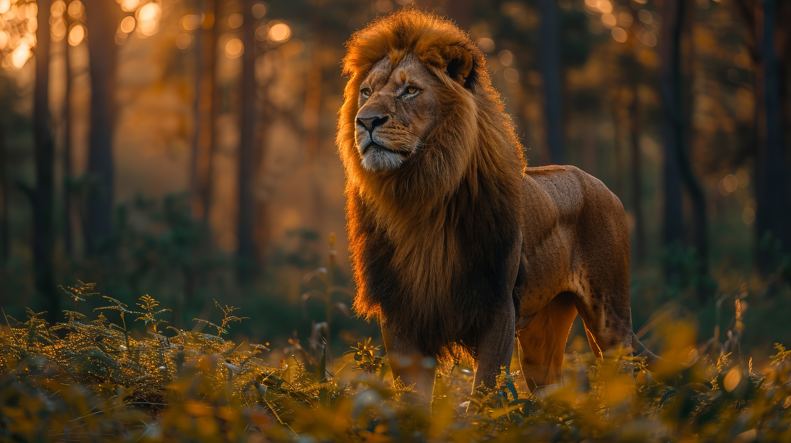

Lion
A lion is a large carnivorous mammal.

A lion is a large carnivorous mammal.
African lions are characterized by their muscular build, large heads, and, in males, a prominent mane. They have tawny coats with lighter underparts, and males typically weigh between 150-250 kg (330-550 lbs), while females are smaller.
Lions are apex predators and primarily hunt large herbivores such as zebras, wildebeests, and buffalo. They often hunt in groups, utilizing teamwork to bring down prey.
Lions are social animals that live in groups called prides. A pride typically consists of related females, their cubs, and a few adult males. Lions are known for their roaring vocalizations, which serve to communicate and establish territory.
African lions inhabit savannas, grasslands, and open woodlands. They require large territories with ample prey and water sources to support their social structure and hunting needs.
Lions are classified as vulnerable, with a declining population due to habitat loss, human-wildlife conflict, and poaching. Conservation efforts include habitat protection, anti-poaching initiatives, and community-based programs to mitigate human-wildlife conflict.
The lion is a symbol of strength and royalty in many cultures. It is often associated with bravery and courage and is featured prominently in mythology, heraldry, and national symbols in various countries.

For more information, visit the World Wildlife Fund's page on lions.